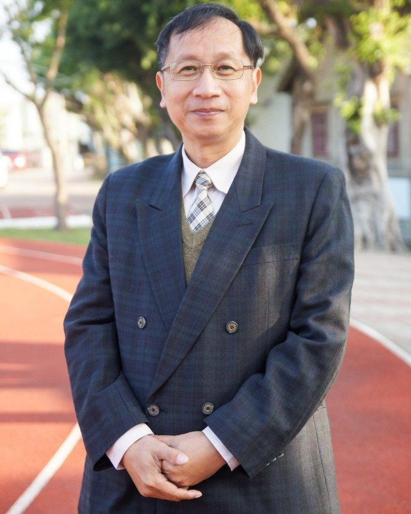
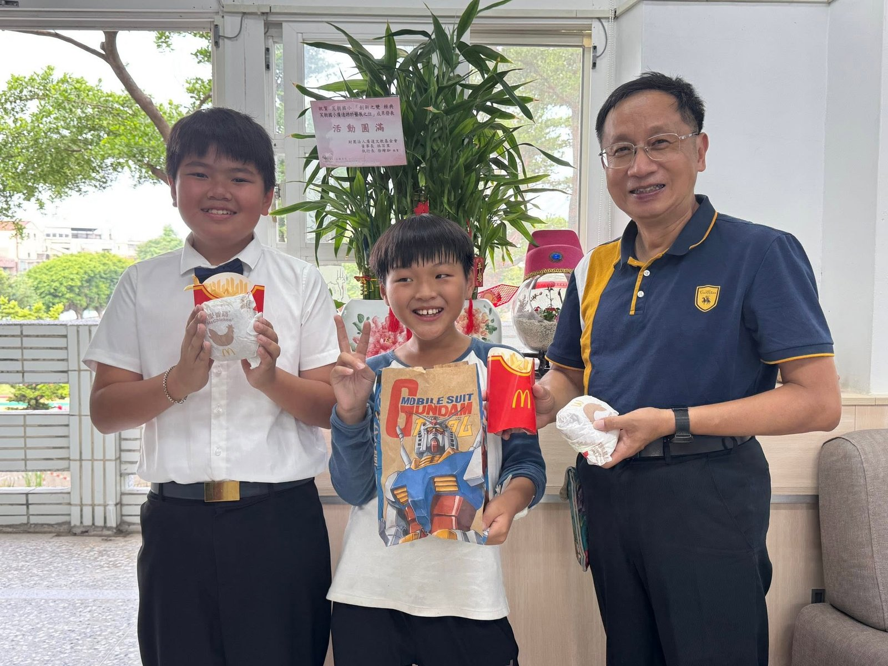
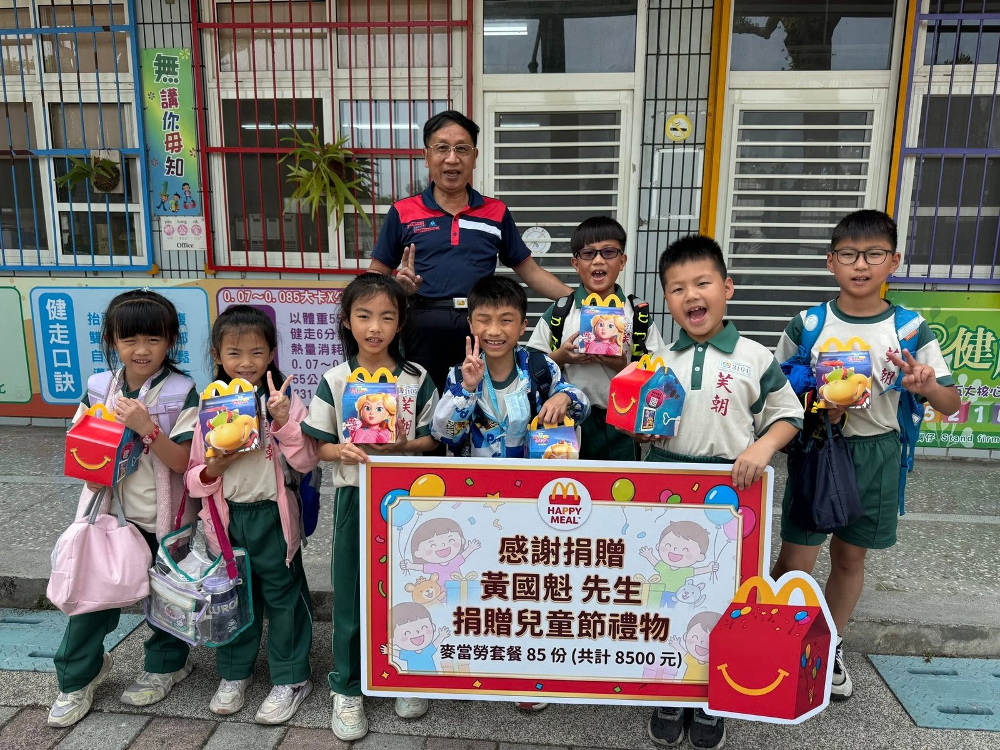
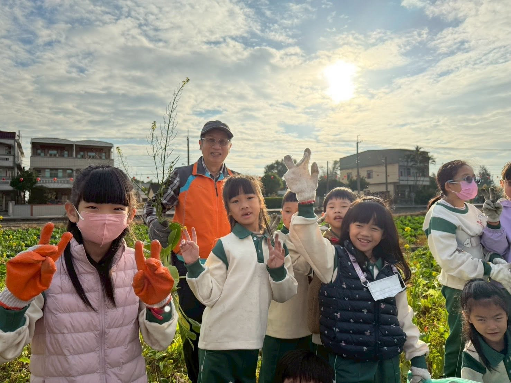

😊
Students first, teachers foremost, parents respected — a small farming-village school built on trust.
學生第一、教師優先、家長尊重——一所建立在信任之上的鄉村小學。

PrincipalPrincipal Chou introduces himself with a small piece of wordplay — a four-line poem that hides his own name, one character at a time, at the start of each line (周・金・木). It is a modest, warmly self-deprecating window into who he is.
The poem says it best — what Principal Chou loves most is a child's honest, innocent heart.
就像詩裡寫的——校長最愛的，是孩子的赤子之心。



Principal Chou's guiding philosophy: students first, teachers foremost, parents respected — seeing students with appreciative eyes, and treating teachers with respect.
周校長的辦學理念：學生第一、教師優先、家長尊重——用欣賞的眼光看到學生，用尊重的態度對待老師。
A farming-village school raises children the way rice fields raise a harvest — through endurance, labor, and everyday life.
農村小學養育孩子，就像稻田孕育收成——靠的是吃苦、勞動與生活裡的日常磨練。
Educators, parents, and friends are warmly welcome to visit Fuchao Elementary — a small farming-village school in Pitou Township where rice paddies surround the campus on every side.
歡迎教育夥伴、家長與朋友蒞校交流。這裡是埤頭鄉的一所農村小學，四周稻田環繞，景緻清幽。